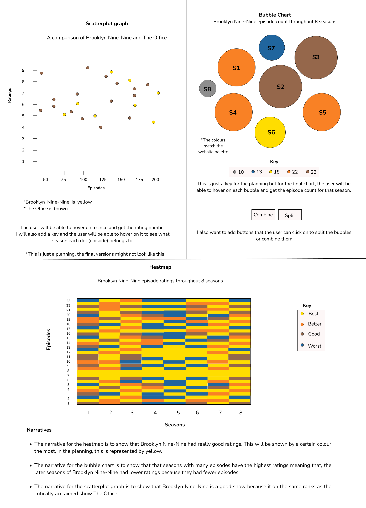

Design
User Alignment
My goal is to make a fully functional website that is also aesthetically pleasing. I want users to find my website different from other websites they have used and to also find each point of interaction intuitive. In general, I hope the users have a good experience when using the website and I hope they get inspired/convinced to give Brooklyn Nine-Nine a watch. My target audience is teens and young adults. The website can still be enjoyed by people who are not part of this target audience but I specifically chose these groups of people because they are the general demographic that is interested in tv shows and fandoms. They participate in forums, conventions and on social media platforms for their different fandoms therefore, this website will be right up their alley.
Information Structure

Interface Elements
- Navigational Components: I added "next" and "previous" buttons at the bottom of each page. These will help the user navigate the website without needing to use the nav menu at the top of the page. Also, on the homepage, I added glowing text that says "Start". When clicked, it takes the user to the next page (About). The user can still use the menu but this is just a fun interaction point when the user lands on the website.
- Informational Components: On the Fan Art page I added tooltips that show the artists' names when the user overs over each image. I also used tooltips for the data visualisations. When the user hovers over a section/point on the visualisation, a description for that item will appear. Another component that I added is a reading progress bar for pages that have a lot of information such as the Design and Theory pages. When the user scrolls up, the progress bar will increase, and when they scroll down, the bar will decrease. This will indicate to the user how far they are in reading/exploring those pages.
- Input controls: I added a return to top button. This allows the user to go back to the top of the page without having to scroll. I also added a flip page button for the Characters page so that the user can go through all the characters and remain at the same place without having to scroll down the page.
User Flow

There are just a few ways to show the order in which the user can go through the website. They have to start on the homepage and from there they can explore it anyhow. However, option 1 (red) is how I would like them to explore it and this is the way the navigation menu and buttons have been arranged.
Style Guide

Design Decisions
- I chose my colour palette based on the Brooklyn Nine-Nine images that I found. I found an image with a navy blue background that I used for my homwpage, an image with a cream white/tan background that I used for the About page, as well as character images with yellow backgrounds. I liked these colours so much because they evoke a serious (navy blue) but cheerful (yellow) mood and that is what the show is. I then chose grey and brown because they complimented the aforementioned colours.
- For my logo, I used Brooklyn Nine-Nine's logo and I added the words "Fan Website" below it. This was a way to show/describe what kind of website it is and also show that it is not the offical website for the show.
- With the menu items, I chose to add a box shadow for each rectangle because it makes the menu look more interresting. I have also not seen any websites that have a menu like this so it makes my website stand out. I Without the box shadow, the menu looks flat and my website looks more like a form of practice instead of the official commercial-grade that we are supposed to produce.
- The social media icons are used in the footer of each page. The close and open menu icons are used for the sidebar when the website is viewed on a mobile screen. The flip page button is used on the Characters page to turn the page and view another character.
- The buttons have rounded borders to compliment the light-hearted, friendly mood of my website. The icons within the buttons are an arrow pointing up, and two arrows facing left and right. These are meant to be intuitive and familiar to the user because it is conventional for left to illustrate going back and right to illustrate going forward.
- For my fonts, I used the Fontjoy website and it helped me pair the
Fira Sansfont with theNunitofont. Both these fonts are readable and they also contribute to the friendly atmosphere that I want my website to evoke. This is because they have rounded edges and generally and generally appear fun not serious. - The text alignment was based on me wanting my website to be readable and neat. The logo is right lighted at the top of each page, centered headings look good above paragraphs or images and paragraphs look neat and readable when justified.
Planning for Data Visualisations
Wireframes
Home

About

Characters

Episodes

Fan Art

Design

Theory